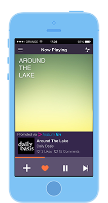
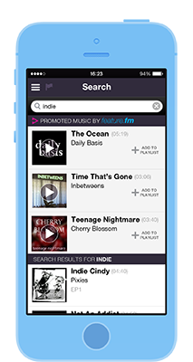
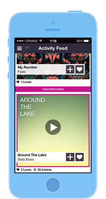

Introduction
Welcome! You can use Feature.fm’s API to access our inventory of promoted songs.
Our API will power your mobile app and website with high quality music while simultaneously providing you with the opportunity to monetize your air-play in a smarter, modern way.
About the API
The Feature.fm API is organized around REST. Our API is designed to have predictable, resource-oriented URLs and use JSON response to indicate if the call was successful or not.
We use built-in HTTP features, like HTTP verbs, which can be understood by off-the-shelf HTTP clients. We also support cross-origin resource sharing to allow you to interact securely with our API from a client-side web application.
JSON will be returned in all responses from the API, including errors.
We hope you enjoy using our API the same way we enjoyed building it for you!
Obtaining API Key
Signing up as a publisher
In order to be able to use the API you must have a valid API key. To obtain one please contact bizdev@feature.fm or sign up to our publishers platform.
It typically takes 2-3 days to approve an API key. Please feel free to send us a note if you want us to review it faster.
Creating a Feature.fm app
The first step of using our API is to obtain an API key. It’s a very simple step that should not take more than two minutes. To Obtain the API key please perform the following:
- Login to the Feature.fm publisher Dashboard
- Click the APPS tab in the header menu
- Click “Add New App” button
- Choose The App Type you need, fill the app details and press “Save & Generate Key”
If you have multiple apps or website it is best to create a separate app for each one. Our dashboard will provide general revenues overview for all applications and more detailed reports for each application, which makes it easy to understand which app performs the best and optimize the integration.
Key Concepts
Feature.fm Partners
WHO IS ELIGIBLE TO BECOME A FEATURE.FM CERTIFIED PARTNER?
Do you have a music app, music blog or music related website? Do you share our passion in helping artists promote their music? Are you tired of clogging your service with ads and want to use high quality content in conjunction with a monetization solution instead?
If you answered yes, Feature.fm is for you.
Why should I join the Feature.fm Partners program?
Feature.fm is an excellent solution for publishers that are looking to monetize their music website/applications without using traditional ads that intrude on their content, increase churn, and disrupt the user experience.
Feature.fm is a music promotional platform that powers music services, websites and apps with great music content while allowing them to effectively monetize.
Additionally, our partners also get a dashboard! Our publishers have access to detailed reports on their revenues and are able to cash out the money anytime with the touch of a button.
Feature.fm Customers
Feature.fm’s main customers are the artists, music labels and music promoters. They are the reason we built Feature.fm and our goal is to help them effectively promote music in the digital streaming age.
Feature.fm was build with the customer in mind, and we put an extensive effort in building a platform that would make it seamless for our customers to enjoy increased exposure in the music apps where their fans are listening.
So how does it work?
Artists who want to promote their music on Feature.fm’s network may create a campaign using Feature.fm’s Advertiser Dashboard. This is done by simply uploading a song to Feature.fm, specifying the target audience, and sending the campaign for approval.
Once the campaign has been approved, it will be served to our partners apps and websites.
What targeting does Feature.fm support?
Feature.fm supports many targeting options, including playing a song to consumers who:
- Listen to specific music genres
- Like specific artists
- Are located in a specific city or country
- Are distinguished by gender & age
How does the budget work?
As part of the campaign creation process, the artist sets a budget for the campaign. The artist has complete control on his/her spending by specifying a daily budget, maximum budget, and maximum bid.
The campaign that will eventually get played is the campaign that is relevant to a specific consumer and has the highest bid attached to it.
How does the artist monitor campaign performance?
The artist receives access to a powerful dashboard with information about the performance of each campaign and the subsequent user interaction (plays, skips, vote up, share, tweet, and more).
Music services that are part of the Feature.fm network sends events that inform us on what happened when the song was played as part of a campaign.
These events, in real-time, are displayed to the customer in an impressive dashboard, helping the customer better understand the performance of the campaign so he/she may optimize it.
Best Practices To Consider
There are many unique ways to integrate Feature.fm. Every app has specific needs and distinct standards for user experience. We have outlined some of our best practices for integrating that will work very well for both artists and music streaming services.
All of the examples listed in this section are targeted towards mobile platforms. However, they are applicable to web, tablet, tv, or any other streaming platform.
In-Stream Song Promotion
 In-Stream integration involves automatically playing a featured song after every X number of songs. This should be used to help an artist gain exposure to new listeners the same way the “old” radio does but in a smarter,modern way.
What are the benefits?
- It is a great discovery feature for the end user
- It is a great way for music streaming services to monetize their airplay without disrupting the user experience with traditional advertisements.
- It does not require a user action such as a click, swipe, etc. to enjoy this revenue stream.
In this example we see a promoted song being played in an example music app. The song is marked as promoted content and the user may add it to a playlist, like it, share it, etc. It is the best practice to use a promoted song as if it were any other song in the hosting music service.
In-Search Song Promotion
 In-Search integration involves displaying a featured song as part of the search results and can be compared to Google’s sponsored search results.
In one scenario, this can be used to help artists gain exposure during the user’s creation of a playlist by allowing him/her to participate in more and more playlists. It is also an excellent way for music streaming services to monetize their search results with high quality music content.
In this example we see three promoted songs being displayed as part of the search results in an example music app. The songs are marked as a promoted content and the user can add the song to playlist, like it, share it, etc. It is the best practice to use a promoted song as if it were any other song in the hosting music service.
In-Discovery Song Promotion
 In-Discovery Song Promotion is to display a featured song in discovery sections in the music streaming services, blog and websites.
Discovery sections may include:
- Music News Feed
- Popular Songs
- Music Charts
- Music News
- Any Browsable Section
This should be used to help artists gain exposure in front of users who want to discover new music. It is also great way for music streaming services to monetize their discovery screens without disturbing the user experience.
In this example we see a promoted song being displayed in an example music app. The song is being displayed with a mark indicating it is a promoted song. The user may add the song to a playlist, like it, share it, etc. It is the best practice to use a promoted song as if it were any other song in the hosting music service.
Consumers
Who is a Consumer?
We define consumers as our partners' end users who are using their platforms to listen to and discover music.
Identify
This endpoint should be used to identify the end consumer. This request should be called from the client.
In order to operate efficiently, Feature.fm requires a unique identifier for each user who receives a promoted song. This allows Feature.fm to avoid playing the same song to the same user multiple times and also to make better song recommendations based on the user’s activity.
HTTP Request
curl "https://api.feature.fm/consumer/identify?api_key={api_key}" -H "Authorization: meowmeowmeow"
The above command returns JSON structured like this:
{ "status": "0", "consumer_token": "SFSD23-2342f-sfdsf4-243rfs-4jghj" }
POST /consumer/identify
POST Parameters
| Parameter | Required | Description |
|---|---|---|
| api_key | true | In order to work with our API you must create an application in our Publisher’s dashboard. Every app has a unique API key that must be sent with all calls to the API. |
| consumer_id | false | Unique id of the user inside the application/website. This will allow feature.fm to choose campaigns more wisely for the user. |
| gender | false | Valid values: “male” or “female” |
| year_of_birth | false | Valid year (YYYY) |
Campaigns
Get Featured Song
The endpoint will return a campaign to be played according to consumer and targeting parameters. Each request will generate a thread with a unique ID that should be used when conducting additional operations such as playing the song, sending events, etc.
HTTP Request
curl "https://api.feature.fm/featured/song?for={purpose}api_key={api_key}" -H "Authorization: meowmeowmeow"
The above command returns JSON structured like this:
{ "status": 0, "data": { "song": { "genres": [ "5335bc3bd40ece90e2000002" ], "title": "Lior", "duration": 232, "albumart_url": "http://dev.feature.fm:9540/images/46f9ee4d4ba5bbd4365c967bdf2c171e.jpg", "sample_url": "http://api.dev.feature.fm:9540/sample/f93291f2d5cd6c46f117e5c8a52acf5e", "buy_song_url": null, "artist": { "name": "Lior", "image": "http://dev.feature.fm:9540/images/04336c6b5f3a01b7ca7a0428543406cd.jpg", "facebook_page_url": "https://www.facebook.com/ListnPlay", "twitter_page_url": "https://twitter.com/featurefm", "bio": "This is the bio of the artist. This information is provided by the artists itself or by his promoter/label", "city": "New York", "country": "United States" }, "stream_url": "http://dev.feature.fm:9540/play/5339a443ddfb9f0000000009", "event_url": "http://api.dev.feature.fm:9540/event/5339a443ddfb9f0000000009", "youtube_url": null, "share_url": "http://dev.feature.fm:9540/share/5339a443ddfb9f0000000009", "report_external_play_url": "http://api.dev.feature.fm:9540/reportExternalPlay/5339a443ddfb9f0000000009" } } }
POST /featured/song
POST Parameters
| Parameter | Required | Description |
|---|---|---|
| api_key | true | In order to work with our API you must create an application in our Publisher’s dashboard. Every app has a unique API key that must be sent with all calls to the API. |
| for | true | ‘display’ – To be used for rendering song information. ‘play’ - To be used when song is intended for auto-play. |
| num_campaigns | false | Number of campaigns to return. Valid values are 1,2, or 3. |
| placement | false | Placement parameter may be used to get more detailed reports about the performance of a specific widget in specific location. |
| campaign_id | false | Valid campaign ID (UDID). |
| consumer_token | true | Valid consumer token. |
| genres | false | Allows the service to provide some information about the user’s context. For example: if he’s listening to Rock radio or likes Folk music, etc. Feature.fm will make sure that the user will get featured songs in the same context. |
Campaign Events
Feature.fm is a music promotion network, as such, we are obligated to providing our customers data and statistics regarding their campaigns.
Feature.fm Supported Events
- Song Skip - Notifying Feature.fm platform when the consumer skips a featured song
- Popular Songs
- Music Charts
- Music News
- Any Browsable Section
To be able to do that in efficient way and in real-time we kindly ask our partners to send us the relevant events specified in the Campaign Events section.
Please Note: The Skip event is mandatory and required to be sent when a featured song is being skipped.
Skip
This endpoint should be used to report a skip event of a featured song. It is mandatory to report back if the user has skipped the song and at which position during the song, as this data is very valuable to the artists and will be displayed on their campaign dashboard.
curl "https://api.feature.fm/{thread_id}/skip" -H "Authorization: meowmeowmeow"
The above command returns JSON structured like this:
{ "status": 0, "message": "success" }
On error the status will be <> 0 and message will provide more details about the error:
{ "status": 1, "message": "invalid parameter: seconds_played" }
POST {event_url}/skip
POST Parameters
| Parameter | Required | Description |
|---|---|---|
| api_key | true | In order to work with our API you must create an application in our Publisher’s dashboard. Every app has a unique API key that must be sent with all calls to the API. |
| seconds_played | true | The number of seconds the song was played before the user skipped the song. |
| consumer_token | true | Valid consumer token. |
Vote Up
This endpoint should be used to report a vote up event of a featured song. It is mandatory to report back if the user has voted up the song and at which position during the song, as this data is very valuable to the artists and will be displayed on their campaign dashboard.
curl "https://api.feature.fm/{thread_id}/voteup" -H "Authorization: meowmeowmeow"
The above command returns JSON structured like this:
{ "status": 0, "message": "success" }
On error the status will be <> 0 and message will provide more details about the error:
{ "status": 1, "message": "invalid parameter: seconds_played" }
POST {event_url}/voteup
POST Parameters
| Parameter | Required | Description |
|---|---|---|
| api_key | true | In order to work with our API you must create an application in our Publisher’s dashboard. Every app has a unique API key that must be sent with all calls to the API. |
| seconds_played | false | The number of seconds the song was played before the event occurred. Specify (-1) if seconds_played is unknown. |
| consumer_token | true | Valid consumer token. |
Vote Down
This endpoint should be used to report a vote down event of a featured song. It is mandatory to report back if the user has voted down the song and at which position during the song, as this data is very valuable to the artists and will be displayed on their campaign dashboard.
curl "https://api.feature.fm/{thread_id}/voteup" -H "Authorization: meowmeowmeow"
The above command returns JSON structured like this:
{ "status": 0, "message": "success" }
On error the status will be <> 0 and message will provide more details about the error:
{ "status": 1, "message": "invalid parameter: seconds_played" }
POST {event_url}/votedown
POST Parameters
| Parameter | Required | Description |
|---|---|---|
| api_key | true | In order to work with our API you must create an application in our Publisher’s dashboard. Every app has a unique API key that must be sent with all calls to the API. |
| seconds_played | false | The number of seconds the song was played before the event occurred. Specify (-1) if seconds_played is unknown. |
| consumer_token | true | Valid consumer token. |
Favorite
This endpoint should be used to report a favorite event of a featured song. It is mandatory to report back if the user has favorited the song and at which position during the song, as this data is very valuable to the artists and will be displayed on their campaign dashboard.
curl "https://api.feature.fm/{thread_id}/favorite" -H "Authorization: meowmeowmeow"
The above command returns JSON structured like this:
{ "status": 0, "message": "success" }
On error the status will be <> 0 and message will provide more details about the error:
{ "status": 1, "message": "invalid parameter: seconds_played" }
POST {event_url}/favorite
POST Parameters
| Parameter | Required | Description |
|---|---|---|
| api_key | true | In order to work with our API you must create an application in our Publisher’s dashboard. Every app has a unique API key that must be sent with all calls to the API. |
| seconds_played | false | The number of seconds the song was played before the event occurred. Specify (-1) if seconds_played is unknown. |
| consumer_token | true | Valid consumer token. |
Facebook Like - Featured Song
This endpoint should be used to report a Facebook like event of a featured song. It is mandatory to report back if the user has liked the song and at which position during the song, as this data is very valuable to the artists and will be displayed on their campaign dashboard.
curl "https://api.feature.fm/{thread_id}/song_fb_like" -H "Authorization: meowmeowmeow"
The above command returns JSON structured like this:
{ "status": 0, "message": "success" }
On error the status will be <> 0 and message will provide more details about the error:
{ "status": 1, "message": "invalid parameter: seconds_played" }
POST {event_url}/song_fb_like
POST Parameters
| Parameter | Required | Description |
|---|---|---|
| api_key | true | In order to work with our API you must create an application in our Publisher’s dashboard. Every app has a unique API key that must be sent with all calls to the API. |
| seconds_played | false | The number of seconds the song was played before the event occurred. Specify (-1) if seconds_played is unknown. |
| consumer_token | true | Valid consumer token. |
Facebook Like - Artist Page
This endpoint should be used to report a Facebook artist page like event as a result of playing a featured song. It is mandatory to report back if the user has liked the artist and at which position during the song, as this data is very valuable to the artists and will be displayed on their campaign dashboard.
curl "https://api.feature.fm/{thread_id}/artist_fb_like" -H "Authorization: meowmeowmeow"
The above command returns JSON structured like this:
{ "status": 0, "message": "success" }
On error the status will be <> 0 and message will provide more details about the error:
{ "status": 1, "message": "invalid parameter: seconds_played" }
POST {event_url}/artist_fb_like
POST Parameters
| Parameter | Required | Description |
|---|---|---|
| api_key | true | In order to work with our API you must create an application in our Publisher’s dashboard. Every app has a unique API key that must be sent with all calls to the API. |
| seconds_played | false | The number of seconds the song was played before the event occurred. Specify (-1) if seconds_played is unknown. |
| consumer_token | true | Valid consumer token. |
Twitter - Tweet
This endpoint should be used to report a tweet event as a result of playing a featured song. It is mandatory to report back if the user has tweeted the song and at which position during the song, as this data is very valuable to the artists and will be displayed on their campaign dashboard.
curl "https://api.feature.fm/{thread_id}/tweet" -H "Authorization: meowmeowmeow"
The above command returns JSON structured like this:
{ "status": 0, "message": "success" }
On error the status will be <> 0 and message will provide more details about the error:
{ "status": 1, "message": "invalid parameter: seconds_played" }
POST {event_url}/tweet
POST Parameters
| Parameter | Required | Description |
|---|---|---|
| api_key | true | In order to work with our API you must create an application in our Publisher’s dashboard. Every app has a unique API key that must be sent with all calls to the API. |
| seconds_played | false | The number of seconds the song was played before the event occurred. Specify (-1) if seconds_played is unknown. |
| consumer_token | true | Valid consumer token. |
Twitter - Follow
This endpoint should be used to report a follow artist on twitter event as a result of playing a featured song. It is mandatory to report back if the user has followed the artist on twitter and at which position during the song, as this data is very valuable to the artists and will be displayed on their campaign dashboard.
curl "https://api.feature.fm/{thread_id}/twtr_follow" -H "Authorization: meowmeowmeow"
The above command returns JSON structured like this:
{ "status": 0, "message": "success" }
On error the status will be <> 0 and message will provide more details about the error:
{ "status": 1, "message": "invalid parameter: seconds_played" }
POST {event_url}/twtr_follow
POST Parameters
| Parameter | Required | Description |
|---|---|---|
| api_key | true | In order to work with our API you must create an application in our Publisher’s dashboard. Every app has a unique API key that must be sent with all calls to the API. |
| seconds_played | false | The number of seconds the song was played before the event occurred. Specify (-1) if seconds_played is unknown. |
| consumer_token | true | Valid consumer token. |
Added To Playlist
This endpoint should be used to report an add to playlist event as a result of playing a featured song. It is mandatory to report back if the user has added the song to a playlist and at which position during the song, as this data is very valuable to the artists and will be displayed on their campaign dashboard.
curl "https://api.feature.fm/{thread_id}/added_to_playlist" -H "Authorization: meowmeowmeow"
The above command returns JSON structured like this:
{ "status": 0, "message": "success" }
On error the status will be <> 0 and message will provide more details about the error:
{ "status": 1, "message": "invalid parameter: seconds_played" }
POST {event_url}/added_to_playlist
POST Parameters
| Parameter | Required | Description |
|---|---|---|
| api_key | true | In order to work with our API you must create an application in our Publisher’s dashboard. Every app has a unique API key that must be sent with all calls to the API. |
| seconds_played | false | The number of seconds the song was played before the event occurred. Specify (-1) if seconds_played is unknown. |
| playlist_name | true | The name of the playlist the song was added to. |
| consumer_token | true | Valid consumer token. |
Errors
The Feature.fm API uses the following error codes:
| Error Code | Meaning |
|---|---|
| 400 | Bad Request – Your request sucks |
| 401 | Unauthorized – Your API key is wrong |
| 403 | Forbidden – The kitten requested is hidden for administrators only |
| 404 | Not Found – The specified kitten could not be found |
| 405 | Method Not Allowed – You tried to access a kitten with an invalid method |
| 406 | Not Acceptable – You requested a format that isn’t json |
| 410 | Gone – The kitten requested has been removed from our servers |
| 418 | I’m a teapot |
| 429 | Too Many Requests – You’re requesting too many kittens! Slown down! |
| 500 | Internal Server Error – We had a problem with our server. Try again later. |
| 503 | Service Unavailable – We’re temporarially offline for maintanance. Please try again later. |